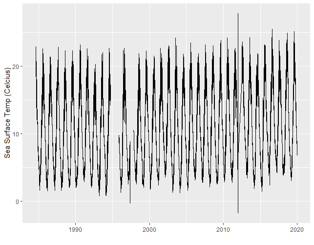

The goal of buoydata is to easily download and process buoy data hosted by National Data Buoy Center. Note: the rnoaa package also has functions to get buoy data. The difference is that (in rnoaa) only one years worth of data can be downloaded at any time from a single buoy.
buoydata downloads multiple years and stitches all years data together in a single data frame. In addition the lazily loaded station description data provided with the package combines many more attributes (than rnoaa) by which to filter.
Date of most recent data pull: 2024-06-06
Example
Find all buoys located between latitude [41,43] and longitude [-71,-67] with a time series of at least 20 years. Then pull and process data from a single buoy.
library(buoydata)
buoydata::buoyDataWorld |>
dplyr::filter(LAT > 41,LAT < 43) |>
dplyr::filter(LON > -71, LON < -69) |>
dplyr::filter(nYEARS >= 20)
#> # A tibble: 5 × 13
#> ID Y1 YN nYEARS LAT LON STATION_LOC STATION_NAME TTYPE TIMEZONE
#> <chr> <dbl> <dbl> <dbl> <dbl> <dbl> <chr> <chr> <chr> <chr>
#> 1 44013 1984 2023 40 42.3 -70.7 BOSTON 16 NM… <NA> 2.1-… E
#> 2 44018 2002 2023 22 42.2 -70.2 9 NM North o… CAPE COD 3-me… E
#> 3 44029 2004 2023 20 42.5 -70.6 Massachusett… Buoy A01 Moor… E
#> 4 bzbm3 2004 2023 20 41.5 -70.7 Woods Hole, … 8447930 Wate… E
#> 5 iosn3 1984 2023 40 43.0 -70.6 Isle of Shoa… <NA> C-MA… E
#> # ℹ 3 more variables: OWNER <chr>, OWNERNAME <chr>, COUNTRYCODE <chr>
# get the data for buoy 44013
get_buoy_data(buoyid="44013",year=1984:2019,outDir=here::here("output"))
# process sea surface temperature (celcius) into one large data frame
data <- combine_buoy_data(buoyid = "44013",variable="WTMP",inDir = here::here("output"))Then plot the data
ggplot2::ggplot(data) +
ggplot2::geom_line(ggplot2::aes(x=DATE,y=WTMP)) +
ggplot2::ylab("Sea Surface Temp (Celcius)") +
ggplot2::xlab("")
Contact
| andybeet |
|---|
 |
Legal disclaimer
This repository is a scientific product and is not official communication of the National Oceanic and Atmospheric Administration, or the United States Department of Commerce. All NOAA GitHub project code is provided on an ‘as is’ basis and the user assumes responsibility for its use. Any claims against the Department of Commerce or Department of Commerce bureaus stemming from the use of this GitHub project will be governed by all applicable Federal law. Any reference to specific commercial products, processes, or services by service mark, trademark, manufacturer, or otherwise, does not constitute or imply their endorsement, recommendation or favoring by the Department of Commerce. The Department of Commerce seal and logo, or the seal and logo of a DOC bureau, shall not be used in any manner to imply endorsement of any commercial product or activity by DOC or the United States Government.